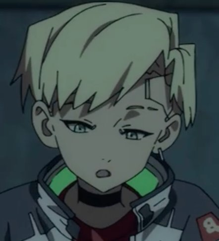

v1


-
1
Lower face too long: chin too far below the mouth
In the photo the eyes are about 3/4 of the way down from the top of the hair, and the mouth-to-chin gap is only about 7% of head height. In the drawing the eyes are only about 60% down and the mouth-to-chin gap is about 17%. Keep the eyes and nose, move the mouth up slightly, and raise the chin point by about a tenth of the head height, redrawing the jawlines to meet it.
-
2
Collar sits too low and open; it should hug the chin
In the photo the high collar wraps tight under the chin, with a choker band right below the chin and the inner collar rising to about mouth level on both sides. In the drawing the collar opens wide below a long neck. Raise both collar edges to about mouth height, close them in around the chin, add the choker band just under the chin, and shorten the visible neck to about one choker's height.
-
3
Hair is too narrow compared with the head height
In the photo the hair is about 1.15 times wider than the head is tall and flares well past the cheeks and ears. In the drawing it is only about 0.94 times as wide as it is tall. Push the outer hair edges out by about a sixth of the head width on each side, so the face sits inside a wider, rounder mass of hair.
Critique by claude-opus-5-5 · lessons ad7383e